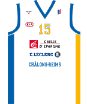

Le Champagne Châlons Reims Basket ou « CCRB », club français, est né pendant l’été 2010 du rapprochement entre les deux clubs professionnels de basket marnais que sont :
- L'ESPE Basket Pro, club emblématique de Châlons-en-Champagne
- Le RCB, Reims Champagne Basket, de Reims, devenu en 2010 champion de nationale 1
Ce rapprochement marque une volonté forte des deux anciens clubs de s'unir pour compter dans l'élite du basket national.
L'objectif est clairement la montée en Pro A dès les prochaines années et les étapes ont été vites franchies car lors de la saison 2011-2012, Châlons-Reims fait une belle saison en se classant 3ème de Pro B avec une victoire de prestige sur le parquet mythique de Beaublanc face au Limoges CSP (82 à 77). Le club atteindra les demi-finales des Playoffs où il sera battu par Boulazac.
Pour la saison 2012-2013, le club a évolué en Pro B, soit la 2e division du championnat de France ou il a terminé 3ème de la saison régulière et a participé aux Playoffs où il sera battu par Antibes, le « CCRB » est donc vice-champion de France. De plus il est à noter que cette équipe est la meilleure défense pour la 2ème saison consécutive, ce club est prometteur et désir écrire son avenir en pro A.
A domicile, le « CCRB » évolue au complexe sportif René Tys possédant une capacité de 2 791 places.
- Saison 2011/2012: Elimination en demi finale des playoffs par Boulazac
- Saison 2012/2013: Vice champion de France.
- Champion de France de Nationale 1B 1989
- Champion de France de Pro B 2003.
- Vice-champion de France de Nationale 2 1986.
- Finaliste de Coupe de France (amateurs) en 1995.
- Champion de Nationale 1 en 2000 et 2010.
- Champion de France de Nationale 2 : 1991
- Vainqueur de la Coupe de France : 1991

Résumé du match de championnat Antibes-CRRB. Cette année le Champagne Châlons Reims Basket, ici en blanc; a une nouvelle fois participé aux playoffs qui est significatif de montée en pro A mais celui-ci a chutté face à une belle équipe, Antibes.
Trophée des playoffs 2013 pour la LNB(Ligue National de Basketball